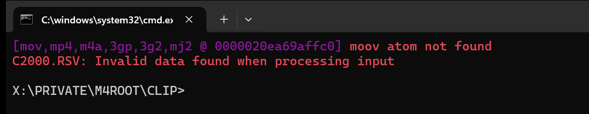

In short
- What happened: the file is missing a small part called moov, the “map” that tells a player how long the video is and where each frame sits. The camera writes it at the end of the recording, and if it shut off before, it was never written.
- What not to do right now: don't format the card, don't keep shooting on it, and don't try to “convert” the file. A converter can't read a file with no map.
- What to do: first check the file arrived complete. If it did, build it a new map with a healthy clip from the same camera and a free program. Steps below.
First: is the file complete?
The same message shows up in two opposite situations, so this is the first check.
- The file came straight off the card: the recording was cut off, the footage is inside, and it can be repaired. Go on to the steps.
- The file came by download, WeTransfer, Drive sync or a copy: compare its size with the original. If it's smaller, or stops at exactly a round number of megabytes, the transfer broke off and the end of the file is empty. No program builds footage that never arrived. Ask for the file again. A real example: a file cut at exactly 1050 MB, 88 percent of it empty.
What to do, step by step
- Copy everything to the computer. The broken file, and while you're at it a healthy clip from the same card. From now on work only on the copies. The card stays aside.
- Prepare a “sample clip”. A healthy recording from the same camera at exactly the settings the broken file was shot with: same resolution (4K, say), same frames per second (25, 50 or 100), same recording quality, and the same compression type (H.264 or HEVC; DJI and GoPro can switch between the two in their settings). Simplest: a clip you shot the same day, just before or after the broken one, without changing settings in between. The clip you copied from the card usually fits. If there isn't one, put a card in the camera, lens cap on, and record 30 seconds.
- Run a free program called untrunc. It takes the map from the healthy clip and builds a new one for the broken file. Download it here (Windows. A normal program with buttons, nothing to type). It handles DJI, GoPro and most other brands. Pick the sample clip, pick the broken file, and run. If the file that comes out won't open, run it once more, that happens. How you know it worked: a new MP4 appears, and it opens in a player.
- Check the whole file, not just the start. The length should match what you shot. Scrub to five or six points along the video, especially near the end. At each one stop, play a few seconds, and check the picture moves smoothly and the lips match the speech. If the picture jumps or the sound drifts: the sample clip doesn't match closely enough. Find a closer match and run again. Don't switch programs.
Why it happened
A video file has two parts: the footage itself, which the camera writes the whole time, and a small map called moov, which tells a player how long the file is and where each frame sits. The camera writes the map last, only when the recording ends cleanly. If it shut off before, there is footage with no map, and the player refuses to open it.
What won't help
- Renaming the file or changing the extension.
- Converters, players that “repair on the fly”, and ffmpeg commands like
-c copyor-movflags faststart. All of them need an existing map to read the file at all. They can move a map, not build one.
Short answers
- Can ffmpeg fix it? Not when the map was never written. ffmpeg needs it to read the file. You need a program that builds a new map from a sample clip, such as untrunc.
- The file is the right size and still won't open? Then the recording was cut off and the footage is inside. Go on to the steps.
- I have no technical background. Can I do this myself? Yes. The program works like any other: open it, pick two files, press a button. Nothing to type. What needs attention is the size check at the start and the video check at the end.
If you're stuck
If the file is big, if the second run also came out jittery, or you just don't have the head for this right now, send me a link to the file and to a healthy clip from the same camera. I first check whether the footage is actually in the file and tell you where you stand. That check is free. If there's something to recover and you want to go ahead, I quote a price before starting and never charge without your approval. You can cancel any time before the work begins, and if I couldn't recover it, you don't pay.
Prefer email? avihaiteram@gmail.com
Who I am
Avihai Teram, videographer and video editor, shooting on a Sony FX3. The first .RSV file I rebuilt was my own: a recording of nearly two hours the camera never finished writing, and it came back whole. Since then more files have passed through here, Sony and DJI, including one that turned out to be half empty because the transfer had stalled. I'm a registered Israeli business (עוסק מורשה, Avihai Teram, business no. 206824625); the first check is always free, and if I couldn't recover it, you don't pay.